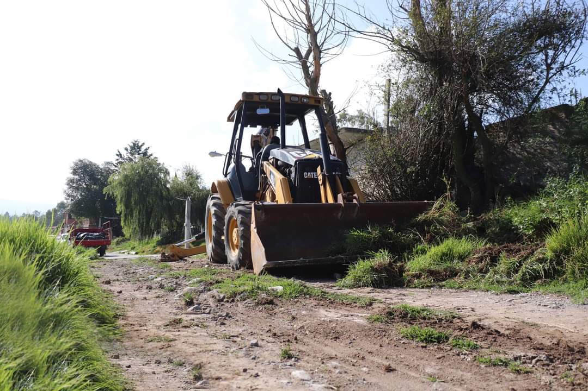

Fase 1
Preparación y limpieza del terreno
En este proceso se prepara el terreno donde se construirá la carretera. Se realiza la limpieza de vegetación, basura, piedras y otros materiales que puedan afectar la construcción. También se retira la capa vegetal y se realizan trabajos de corte o relleno para dejar el terreno aproximadamente al nivel establecido en el proyecto.